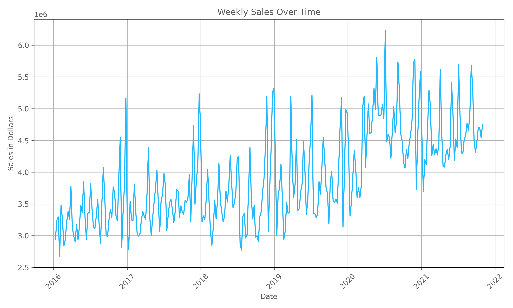
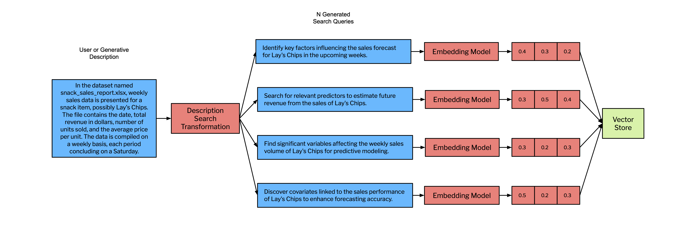
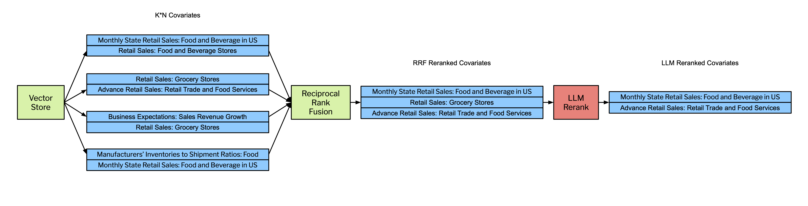
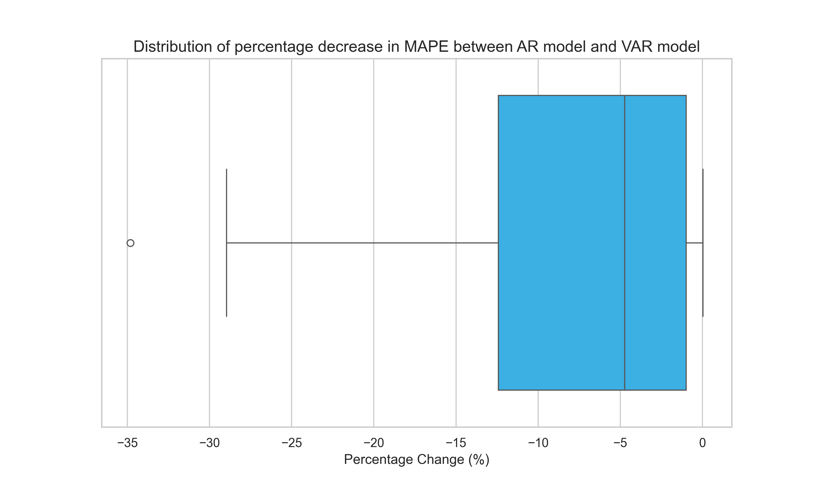
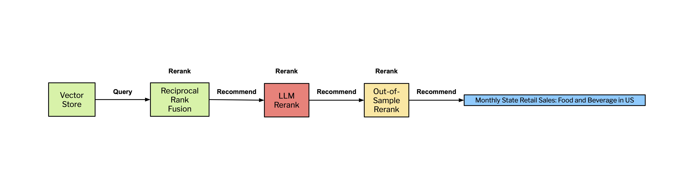
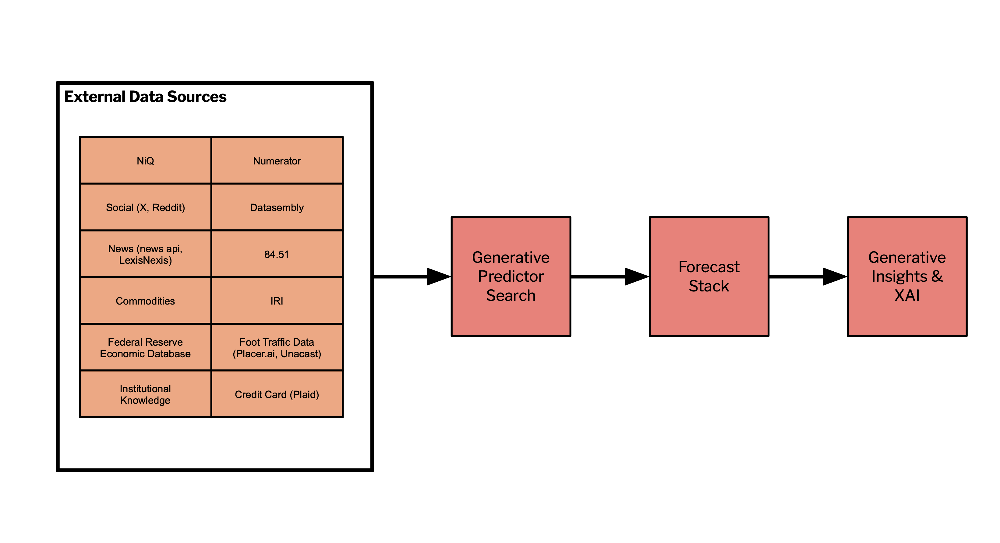

Improving Forecasting Models with Large Language Models
At Tickr, we use large language models (LLMs) to enhance the data science life cycle. In our previous post, we explained how LLMs can improve access and explainability of large-scale multivariate forecasts. In this post we introduce Generative Predictor Search (GPS), demonstrating how integrating the reasoning capabilities of LLMs can improve the predictive performance of time series forecasting models and help interpret the relationship of influential factors on forecasted variables. Our proposed method reduced the mean absolute percentage error (MAPE) by an average of 15.6% when compared to naive univariate autoregression models, with a 13 times decrease in run time and added logical validation of covariates. These qualitative and quantitative improvements on traditional modeling techniques position our Generative Predictor Search as an industry leader in explainable forecasting.
Section 1 provides a detailed introduction and motivation for building our solution. Section 2 of this post discusses the data used to build our GPS system. Section 3 describes the GPS system in detail. Section 4 provides experimental results demonstrating how our system can improve out-of-sample performance and reduce spurious predictors. Section 5 provides a discussion of the GPS system and future work and section 6 provides concluding remarks.
1. Introduction
At Tickr, we leverage LLMs to enhance the accessibility of our data science models (pricing, forecasting, consumer segmentation, substitutions, etc…) and insights for our clients. For more details see our research blog.
Time series are a common type of data our clients, usually consumer packaged goods ****companies (CPGs), want us to create additional value and insights from. While there is a body of research using LLMs for time series analysis (Gruver et al. 2023, Garza et al. 2023, Cao et al. 2023), “classical” time series models such as ARIMA, state-space and exponential smoothing are still much more scalable, don’t require billions of tokens to train, and from our experience can perform just as well (or even better) than the current state of the art in LLM & Transformer (Vaswani et al. 2017) based time series analysis. That being said, modern frontier LLMs such as GPT-4, Claude Opus, Llama 3, Mixtral 8x7B, and Gemma have extremely powerful parametrized knowledge. This parameterized knowledge allows us to build an LLM system to improve our forecasting models.
One of the most challenging tasks when training a forecasting model is finding covariates (predictors) that improve forecast performance and make intuitive sense. This challenge is amplified when utilizing external data sources, such as the Federal Reserve Economic Database (FRED), X (formerly Twitter), or news, as each source requires its own search and integration methods when combining time series. As the number of data sources increases, the number of possible covariates balloons, signals are often weak, and performing hundreds of thousands of statistical tests like the Granger Causality test lead to spurious predictors.
Tickr’s AI & Data Science team has developed a system called Generative Predictor Search (GPS) to help produce better forecasting models by searching for predictive covariates that are interpretable and make intuitive sense. We leverage the emergent paradigm of Retrieval Augmented Generation (RAG) alongside search and recommendation engine principles to recognize potential covariates while supplying clear logical validation and transparency while building models.
In our RAG pipeline we first utilize vector search as the basis for identifying relevant covariates, augmented by a series of reranking steps to refine the selection process. This process allows for the exploration of a wide part of the embedding space, ensuring a broad capture of potential covariates. For precision we employ a multi-tiered reranking strategy utilizing Reciprocal Rank Fusion (RRF), which consolidates rankings from various searches based on consensus, effectively pruning less relevant covariates. This is followed by a Generative Reranking step, where an LLM evaluates the relevance and predictive potential of each covariate, further narrowing the selection to those with the highest likelihood of predictive power based on the LLM’s world model. Optionally, an Out-of-Sample Performance Reranker evaluates covariates based on their forecasting performance on unseen data.
2. Data
2a. Business Time Series
This analysis uses syndicated weekly national sales data for carbonated soft drink (CSD) brands for a single retailer. The dataset covers roughly 6 years of data from 2016 to 2021 for various CSD brands such as Coke, Pepsi, and Sprite which provides roughly 312 weekly observations for each CSD brand. Studying these data allows us to analyze trends typical to consumer packaged goods (CPG) industries, including patterns of monthly seasonality, long-term trend growth, and yearly cyclicality. Figure 1 below illustrates national weekly sales data for a selected CSD brand, illustrating the described trends.

Figure 1: National, weekly sales for a select CSD brand for one retailer.
As illustrated in Figure 1 above, the data for a selected CSD brand exhibits many of the properties common to business data such as long-term trends due to sales growth, seasonality as observed by the monthly fluctuations, holiday effects of Christmas and thanksgiving, and cyclicality as shown by yearly fluctuations attributed to recession and non-recession years.
2b. Predictive External Data
For our research, we used the Federal Reserve Economic Database (FRED) to search for predictive covariates. The FRED collects time series data across a broad spectrum of economic indicators, including GDP, inflation, employment, and interest rates. These data are collected from various national, international, public, and private sources and some popular sources include government agencies such as the Bureau of Economic Analysis, Bureau of Labor Statistics, Federal Reserve Board of Governors, and Census Bureau. We chose the FRED based on three assumptions;
- As of March 1, 2024 they have 823,760 time series uploaded in their database. This large quantity of time series provides a robust test of our system’s ability to accurately identify influential external factors.
- Business time series forecasts may be improved when economic data is included as an additional predictor variable.
- Spurious predictors are particularly likely to occur in time-series analysis since time-series variables tend to trend upwards over time (for example, GDP, Population, CPI, and Grocery Sales). Two variables may appear to have a significant relationship, but their correlation may be due to the confounding influence of time. This makes the task of identifying external factors that have a significant relationship more challenging.
The FRED was indexed in a Weaviate vector database with embeddings produced with OpenAI’s text-embedding-ada-002. Each time series' textual metadata (title, notes, etc.) is indexed into a 1536 dimensional vector. We exclude non-textual attributes (e.g., series ID, source, units, and seasonal adjustment) from the vectorization process, allowing for efficient semantic search and traditional filtering.
3. Generative Predictor Search
We now present the GPS system for finding predictive covariates that are interpretable and make intuitive sense.
3a. Input Data & Description Generation
Generative Predictor Search (GPS) ingests time series data into our system through file uploads or a direct database connection. A key step in this process involves creating a generated description of the forecast variable with one of our language models to craft a succinct summary of the content. The generated description serves as a seed for generating search queries.
For example, when a file named snack_sales_report.xlsx is uploaded, our system produces a clear, precise description:
In the dataset named snack_sales_report.xlsx, weekly sales data is presented for a snack item, possibly Lay's Chips. The file contains the date, total revenue in dollars, number of units sold, and the average price per unit. The data is compiled on a weekly basis, each period concluding on a Saturday.
We advise users to refine our generated descriptions to mitigate this risk and improve their results. Notably, this is the only aspect of GPS where performance depends on human input, enhancing the system's accuracy and effectiveness.
3b. Retrieval Augmented Generation Fusion with Generative Reranking
We employ a variant of the recently popularized method known as RAG Fusion (Gao et al. 2024, Rackauckas et al. 2024), but add a LLM reranking step to improve the precision of our recommendations. We name this Retrieval Augmented Generation Fusion with Generative Reranking (RAGFGR), which is the key component of GPS. We employ a dual reranking system, first utilizing a metric-based approach with reciprocal rank fusion, followed by a generative reranking step leveraging a large language model (LLM). By doing this, we aim to significantly improve the precision of identifying relevant covariates.
We use both OpenAI’s GPT-4 and text-embedding-ada-002 models to build the RAGFGR component of GPS. There is no reason our architecture does not generalize to other open and closed-source models.
As seen in Figure 2, we start the RAGFGR pipeline to search for predictive covariates by using the generative descriptions discussed in section 3a to generate N search queries. The value N scales with the total compute required for GPS and the number (and redundancy) of returned covariates. Increasing N beyond a certain value (determined empirically) often yields diminishing returns in the relevance and utility of the additional covariates, while also adding to computational cost. We have found an N=4 performs well without taking unnecessary time and expense given the scope of data used in this analysis. Each of these N search queries are generated by an LLM and subsequently projected to an embedding space via an embedding model. We then perform N searches across our vector store. We use the open source vector database Weaviate to store our covariate description embeddings where search rankings are the cosine similarity between the embedded covariate and the search query.
We perform N search queries because each one will be projected into a different part of the embedding space. This makes our RAGFGR method return a large number of vectors that are related to the initial description of the data, but are encoded with slightly different semantics and thus search a different part of the embedding space.

We subsequently return a set of K candidate covariates per search query. This results in N*K vectors returned from the vector store. The larger we set K the more candidate covariates we return (high-recall search). The U-shaped performance due to Lost In the Middle effects (Niu et. al 2023), cost, and latency should be considered when choosing K. It must also be noted, open or closed sourced LLMs do not currently have large enough context windows to fit the entire set of covariate descriptions included in the FRED database. This would take a minimum $1.46\times10^7$ token model context window to accommodate the entire set of FRED covariates and as previously mentioned, the Lost in the Middle effect would be an issue.

We then send the candidate covariates to a reciprocal rank fusion scoring step as seen in Figure 3. By pruning less relevant covariates, RAGFGR optimizes the selection of candidate covariates for the more computationally intensive generative reranking step. The following equation defines the Reciprocal Rank Fusion (RRF) score for a document $d$ as the sum of the reciprocals of the rank positions $\text{rank}_i(d)$ of that document across $N$ different ranking lists, adjusted by a constant $j$.
$$ \text{RRF}(d) = \sum_{i=1}^{N} \frac{1}{\text{rank}_i(d) + j}
$$
We rank order the retrieved covariates by RRF score and select the covariates with the top 100 scores.
Now that the potential covariates have been reduced to a leaner, more likely set, we then perform a generative reranking step. Generative reranking uses an LLM’s extensive parameterized knowledge and world model to assess the relevance and potential predictive power of each covariate. The RAGFGR generative reranking step returns a small set of recommended predictors that make intuitive and economic sense. Note that unless the temperature is set to 0, a generative reranker can return different rankings each time it is prompted. We provide the LLM with few-shot reranking examples and return results in the form of a JSON object in Figure 4 below:
[
{"time_series": "QEDEWE3R", "impact": 100},
{"time_series": "EFP420M", "impact": 77},
{"time_series": "EFP421M", "impact": 59},
{"time_series": "DGHS2", "impact": 22},
{"time_series": "H0RIFLGFCZ20NMV", "impact": 2}
]
This JSON structure succinctly conveys the outcome of our reranking process, listing the time series identifiers from the FRED database and their respective impact scores. These impact scores not only test the LLM’s ability to rank, but also its ability to assign the “magnitude” of the ranking. We explore the impact scores with out-of-sample performance in section 3b.
We guardrail our output parsing by using Pydantic Validators and an additional call to an LLM to ensure our outputs are consistent. Once RAGFGR has produced a candidate set of predictive covariates, we can send this to a forecasting model for prediction or optionally send this to an additional reranking step we call the Out-of-Sample Performance Reranker.
3b. Out-of-Sample Performance Reranker
We finally employ what we call an Out-of-Sample Performance Reranker to enhance our results. To ensure that our forecasting models remain parsimonious we only return a small number $p$ of predictive covariates from the Out-of-Sample Performance Reranker. The Out-of-Sample Performance Reranker ranks the candidate covariates based on their out-of-sample forecasting performance.
This reranking process prioritizes covariates that not only show a significant historical correlation with the target variable but also demonstrate robust predictive abilities in unseen data periods. By focusing on out-of-sample performance, the reranker effectively filters out covariates that may appear to make sense as a predictor, but do not help or make performance worse all together. We consider this part of RAGFGR optional, as in practice users of this system will prune out low performing covariates on performance metrics naturally, effectively employing the reranking step by doing so.
We use the following parameters in RAGFGR and the Out-of-Sample Reranker:
| K | N | j | d | p |
|---|---|---|---|---|
| 100 | 4 | 60 | 811,453 | 5 |
4. Results
4a. Forecasting Performance
To evaluate how well our GPS system performs, as described in section 2a, weekly sales data aggregated nationally is gathered for thirty carbonated soft drink (CSD) brands for a single retailer over the time period 1/10/2016 - 10/31/2021. Forecasting performance is evaluated between a univariate autoregressive model (AR) and a multivariate vector autoregression model (VAR) which includes the variable of interest along with the top select external covariate from the GPS results. For each of these variables, a list of GPS recommended covariates is obtained and further filtered for the top recommended covariate based on out-of-sample forecasting performed described in section 3b. Table 1 below provides list of a few CSD brands and the top recommended covariates we found:
Table 1: List of Carbonated Soft Drinks Brands and LLM recommended covariates
| Brand | Top recommended covariate | Covariate Description |
|---|---|---|
| Coca Cola | MRTSSM4453USS | Retail Sales: Beer, Wine, and Liquor Stores, Monthly |
| Dr Pepper | WPU0289015411 | Producer Price Index by Commodity: Processed Foods and Feeds: Soft Drink Flavoring Syrup, Sold in Bulk |
| Sprite | MRTSSM445USN | Retail Sales: Food and Beverage Stores |
| Pepsi | MRTSSM445USN | Retail Sales: Food and Beverage Stores |
| Diet Coke | MRTSMPCSM445USN | Retail Sales: Food and Beverage Stores |
These recommended covariates highlight a few key points. First, retail sales and price indexes were identified as recommended covariates. This makes intuitive sense given that weekly CSD sales are a small component of retail sales which capture the larger macroeconomic condition of the market in which CSDs are typically sold in and the producer price index for soft drink flavoring syrup is a proxy for supply costs. Second, the covariates recommended are very similar or the same between brands. This finding is not surprising given the similarity among selected CSD brands, and the limited set of possible external covariates supplied to the model (in this case exclusively FRED data).
Next, weekly sales is forecasted using a univariate AR model selecting the optimal number of lags that provides the best forecasting performance. The model is described below:
$$ Y_t = c + \psi_{1}Y_{t-1}+\psi_{2}Y_{t-2}+...++\psi_{p}Y_{t-p}+\epsilon_{t}\ Y=outcome\ variable,\ \epsilon =\ error $$
Where previous values of weekly sales are used to forecast future values of weekly sales for thirty CSD brands. To determine the optimal number of lag variables for the AR model, we first fit the model with one lagged variable using 80% of the data, which we consider the training data. We then validate the model on the next sequential 10% of the data (i.e. validation data) to obtain and calculate a measure of forecast performance, mean absolute percentage error (MAPE), associated with the fitted model. We experiment with up to ten lagged values, each time fitting the model the training and evaluation on the validation data to find the number of lagged variables with the lowest MAPE. Once we identify the optimal number of lags, we reestimate the model on the combined the training and validation sets with the optimal number of lags and calculate the MAPE based on the actual and forecasted values for the remaining sequential 10% of the data referred to as the test data. Table 2, provided below, summarizes the forecasting performance results. There is variability in forecasting performance across CSD products and overall the average MAPE is 10.37%.
Table 2: Forecasting Performance compared AR vs. VAR model with recommended covariate
| MAPE Results (%) | AR | VAR, including GPS recommended covariate | Percentage Difference in MAPE (%) |
|---|---|---|---|
| Count | 30 | 30 | 30 |
| Mean | 10.37 | 9.22 | 15.61 |
| Standard Deviation | 4.58 | 4.71 | |
| 25% | 6.96 | 5.68 | 18.39 |
| 50% | 9.45 | 7.98 | 11.08 |
| 75% | 11.66 | 10.72 | 0.080 |
To determine whether including additional recommended covariates helps with forecast performance, we utilize a multivariate VAR model which consists of the variable we are interested in forecasting (i.e., weekly sales) and the LLM-recommended covariate (in our example for CSD brands, typically retail sales or producer price index of flavored syrup) to forecast weekly sales. The VAR model is a “generalization of the univariate autoregressive model for forecasting a vector of time series… which comprises one equation per variable in the system.” A basic two-variable VAR system with only two lagged variables is described below:
$$ y_{1,t} = c_1 + \phi_{11,1}y_{1,t-1}+\phi_{12,1}y_{2,t-1}+\epsilon_{1,t}\y_{2,t} = c_2 + \phi_{21,1}y_{1,t-1}+\phi_{22,1}y_{2,t-1}+\epsilon_{2,t}\ y_{i,t}=outcome\ variable, \epsilon=\ error $$
Where the VAR model consists of a system of equations and each equation includes a constant and past (lagged) values of all variables in the system. For example, the first equation predicts weekly sales based on lagged variables of itself (i.e., weekly sales) and lagged values of the recommended covariate, which is typically retail sales or producer price index for soft drink flavoring syrup. We identify the optimal number of lags to include in the VAR model using a similar approach as we did in the AR model.
To determine the optimal number of lagged variables to include in the VAR model, we estimate the model on 80% of the data (i.e. training data) with up to ten lags, evaluate the forecast performance on the next sequential 10% of the data (i.e. validation data), find the number of lags that gives the lowest MAPE, and then estimate the VAR model on the combined training and validation set and evaluate the forecasting performance on the remaining 10% test data. Table 2 above includes the forecasting performance results of estimating a VAR.
We observe a few key insights. First, the average MAPE across these thirty CSD brands is lower for the VAR model relative to the AR model suggesting that on average including the additional covariate improves forecasting performance by lowering average MAPE by 15.61%. The results are similar if we compare the median in MAPE across all thirty CSD brands. Second, including the additional covariate tends to increase forecasting performance across all thirty CSD brands and rarely deteriorates performance. We find only one out of thirty CSD brands forecast better with a univariate AR model and no GPS covariate. See Figure 4 below illustrating the distribution of the percentage decrease in MAPE between the AR and VAR results.

Our findings suggest that our GPS methodology finds relevant covariates that increase forecasting performance and rarely lead to a decrease in forecast performance.
4b. Spurious Predictors
Spurious predictors are variables that appear to influence the outcome variable, but do so without a causal link. These predictors typically gain their apparent predictive power from random chance, sample-specific variation, or hidden relationships with other causative variables, leading to misleading interpretations and potentially invalid model predictions.
Spurious predictors often arise due to:
- Exclusion of Confounding Variables: The predictor correlates with a confounding variable that is the actual cause of changes in the outcome. For example, if X is a spurious predictor and Z is a confounder, X and Y (outcome) might correlate because both are influenced by Z, not because X influences Y.
- Overfitting: In cases where a model is overly expressive (includes too many features) relative to the sample size, spurious predictors may emerge as significant due to random fluctuations in the data rather than any substantive relationship with the outcome.
GPS can help reduce the number of spurious predictors due to (1) & (2). To validate the usability of the covariates selected by GPS, we compare them against retrieved covariates from a baseline method we call exhaustive search (ES) that searches over the FRED and recommends predictors with the highest forecasting accuracy. In order to test whether predictors are spurious we use a four-step generative process. The steps can be distilled as follows:
- Generative Predictor Search: Return top predictor using GPS.
- Exhaustive Search: Perform ES over FRED database returning top predictor measured by out-of-sample MAPE.
- Generate Explanations: We use
gpt-4-1106-preview****to generate plausible explanations for both the GPS & ES predictors. We encourage diversity in the explanations in two ways:- We randomly sample a minimum and maximum number of sentences to put in the instruction (prompt) by first selecting a minimum length
length_1between a and b. We then sample a scaling factor $\alpha$, and then compute the maximum lengthlength_2as a multiple of the minimum length, multiplied by $\alpha$. - We condition our generation on the instruction N times and at temperature of T>0. We chose N=5 & T=0.7 here.
- We randomly sample a minimum and maximum number of sentences to put in the instruction (prompt) by first selecting a minimum length
Generate a plausible and realistic explanation as to why predictor {cov} from the FRED database is a good predictor of the US national sales of {target}. Make it {length_1}-{length_2} sentences long. Only output the explanation and nothing else!
Figure 5 displays the prompt we use to generate our explanations with placeholders for covariate, target variable, and the explanation length.
We include a generative explanation for the top predictor returned for GPS and ES for the carbonated soft drink Dr Pepper. GPS returns the top covariate Producer Price Index (PPI) by Commodity for Processed Foods and Feeds, specifically for Soft Drink Flavoring Syrup Sold in Bulk and we generate the following explanation:
The Producer Price Index (PPI) by Commodity for Processed Foods and Feeds, specifically for Soft Drink Flavoring Syrup Sold in Bulk, can be a strong predictor of Dr Pepper Regular Soft Drinks sales for several reasons. Firstly, the PPI reflects the wholesale price changes of flavoring syrup, which is a primary input in the production of Dr Pepper. When the PPI for this syrup increases, it suggests higher production costs for the company, which may lead to higher retail prices for Dr Pepper. These potential price changes can affect consumer demand and sales volume. Furthermore, the PPI can be an early indicator of inflationary pressures within the industry that might not yet be reflected in consumer prices. If producers are facing increased costs, they may eventually pass these costs on to consumers. Monitoring the PPI allows analysts to anticipate these changes and predict their impact on sales. The specificity of the flavoring syrup index is particularly relevant for Dr Pepper since its unique blend of flavors is central to its branding and consumer appeal. Changes in the costs of its flavor components are directly tied to its production economics and ultimately to its market success.
For ES the top covariate returned is The Consumer Price Index: Harmonized Prices: Restaurants and Hotels (COICOP 11): Total for Austria and we generate the following explanation:
The Consumer Price Index: Harmonized Prices: Restaurants and Hotels (COICOP 11): Total for Austria from the FRED database could potentially serve as a good predictor for Dr Pepper Regular Soft Drink sales for several reasons. Firstly, CPI data reflects inflation and changes in consumer purchasing power within the economy. When the CPI for restaurants and hotels increases, it indicates higher costs for dining and leisure activities. As a result, consumers might opt for more affordable alternatives for their refreshment needs, such as purchasing soft drinks like Dr Pepper at supermarkets or convenience stores.
Moreover, the CPI for the specific category of restaurants and hotels may correlate with lifestyle and disposable income changes. If the prices in this category rise, people may allocate their budget away from eating out towards in-home consumption, where Dr Pepper could be considered a popular beverage choice. Additionally, trends seen in the hospitality sector can serve as a broader economic indicator, which could also influence consumer behavior in the beverage market. In the context of Austria, if the local culture includes a pattern of consuming soft drinks like Dr Pepper alongside meals or during social occasions typically held in these establishments, the CPI could indirectly reflect demand for such products. Therefore, the CPI for restaurants and hotels in Austria could indeed provide insightful data for predicting the sales trends of Dr Pepper Regular Soft Drinks in the region.
The GPS's focus on the Producer Price Index for Soft Drink Flavoring Syrup directly ties to the costs of primary ingredients specific to carbonated soft drink production such as Dr Pepper, providing a clear and directly relevant economic indicator. In contrast, the ES's top covariate on the Consumer Price Index for Restaurants and Hotels in Austria appears less directly connected to Dr Pepper sales. The apparent spuriousness of the ES predictor suggests that it might capture coincidental correlations rather than causal influences, underscoring the importance of using domain knowledge and targeted data to improve predictive models effectively. Therefore, the GPS provides a useful predictor for Dr Pepper's market performance, offering improvements in out-of-sample performance and making sense from an inferential perspective.
-
Generate Win Rate Calculations: We use another LLM to grade which explanation is more likely to be generated when conditioned on a spurious predictor. We limit bias in the generative grading in two ways:
- We use a different LLM, Anthropic’s
claude-3-opus-20240229, to grade the explanations. It has been shown (Panickssery et al. 2024) that LLM’s prefer their own generations, so while both of our explanations are generated from a GPT-4 checkpoint we still chose to use a different LLM to grade to mitigate any bias. - We randomly assign the order of the explanations and expose them to
claude-3-opus-20240229. We do this to avoid any preference or attention to the explanation in earlier parts of the context window due to Lost in the Middle effects previously mentioned.
We start the grading instruction with a description of the task and also include a 2-shot in-context example to help the LLM better understand the task.
Our results are summarized in Figure 5. We find that
claude-3-opus-20240229selects our GPS generated predictors over ES 90% of the time. - We use a different LLM, Anthropic’s

This is remarkable performance when you consider that the explanations provided for ES sound plausible and convincing. We rely on an LLM as a proxy for human preference and its reasoning capabilities to determine whether the GPS or ES identified predictors and generated descriptions are more plausible to help a forecasting model. Recent studies have suggested that reasoning is an emergent property of LLMs and they exhibit reasoning patterns that are similar to those of humans (Huang, Chang, May 2023). In addition, other work has found that LLM showed promise to be used as proxies for human preference (Verma, Bhambri, Kambhampati, 2023). The Win Rate (Figure 5) results suggest that GPS predictors are selected 90% of the time as more plausible covariates to include in a model. These findings suggest at the very least that GPS Predictors are less spurious than ES Predictors and are aligned with results based on human reasoning capabilities.
4c. Runtime between GPS and ES
In this section, we compare the runtime performance between GPS and ES to obtain a top predictor for the thirty CSD brands we analyze in this study. Table 3 below reports the runtimes it took to obtain the top predictor from GPS and ES. There are a few insights. First, the GPS runtimes vary with an average runtime of 40.5 seconds and a standard deviation of 12.4 seconds. The reason is that GPS can vary in the number of potential top predictors it returns. The RAGFGR process returns a set of “K” candidate covariates returned per “N” search queries, which can be different for each CSD brand. The average number of covariates that GPS returns is 34, but the number of covariates returned ranges from 14 to 80 covariates. Although less of an issue, the runtime can vary depending on how busy a LLM’s network is during the time of prompting.
To obtain ES runtime results for the thirty CSD brands, we randomly sampled 10,000 time-series variables from the FRED database. After preprocessing and merging time series with the CSD data, there are approximately 5,000 time-series variables to perform ES and return a top predictor measured by out-of-sample MAPE. As Table 3 illustrates, the ES runtimes are an average of 528 seconds with very little variance in the ES runtimes since a LLM is not used in the ES process.
Table 3: Comparing runtime performance between GPS vs. ES
| Runtime (seconds) | GPS | ES |
|---|---|---|
| Count | 30 | 30 |
| Mean | 40.5 | 528.0 |
| Standard Deviation | 14.8 | 4.8 |
The results illustrate that GPS returns top predictors at least 13 times quicker than performing ES searching approximately 5,000 time-series from the FRED database. Considering the FRED database contains over 823,760 time series and assuming 400,000 time series are suitable for analysis and merging with the CSD data, this suggests that performing ES over the entire dataset for a single variable would take 12 hours to return a top predictor. These findings suggest GPS is a fast and efficient way to find relevant covariates that make economic sense at scale.
5. Discussion
5a. SmartForecast
Tickr has already integrated the GPS system into a product called SmartForecast. SmartForecast allows users to upload data via CSV, API, or a direct connection to a database as discussed in section 3a to begin searching for covariates. SmartForecast leverages Tickr’s proprietary forecasting stack, optimizing multivariate forecasting models using the GPS provided covariates.
The forecasts and GPS covariates are then sent to our Generative Insights & Explainable AI (XAI). Here, the focus is on not just providing forecasts but also on generating deeper insights and explanations that articulate the 'why' and mechanisms behind predictions. We see this as a key piece to building trust in the AI's decision-making process and enables users to make informed strategic decisions based on a clear understanding of the underlying factors influencing the forecast outcomes. See our SmartForecast blog post for more details and for a high-level architecture for multi-source integration see Figure 8.
5b. Search & Recommendation Engines
The entire GPS system can be distilled into three key steps (or operations): query, reranking, and recommend. Within the GPS framework, the query operation is executed and performs high-recall searching returning a large set of candidate covariates from the vector store. The reranking operations are RRF, the generative reranking, and the out-of-sample reranking. The outputs of the reranking are recommendations on potential predictive covariates. Figure 6 illustrates this process where the synthesis of search and sophisticated reranking mechanisms yields highly curated and actionable insights from large sets of data.

The query, rerank, and recommend operations as outlined in the GPS framework, are fundamental beyond specialized applications like GPS or generative AI. These operations form the core of many modern search & recommendations systems across various domains. In the academic literature, these concepts are well-documented (Wang et al. 2015, Liu et al. 2020., Wu et al. 2022). GPS further highlights the adaptability and effectiveness of the query-rerank-recommend framework across different technologies and applications.
5c. Future Work
The GPS system represents a way to incorporate external data sources in forecasting models at scale. While we only examine external data from the FRED in this paper, we are actively working on connecting a large set of heterogeneous external data sources to the GPS system for improved predictive performance with reduced spurious correlations.
Full integration will include covariates & predictors from syndicated sources like NIQ & IRI, promotional and out-of-stock data from Datasembly, shopper-level basket data from Numerator, economic data from the FRED, commodity prices from commodities-api, social & news API’s, foot-traffic data, and more. See Figure 8 below for a high-level view of heterogeneous data source integration into GPS.

6. Conclusion
We evaluated the Generative Predictor Search (GPS) system developed at Tickr, aimed at enhancing forecasting models by identifying relevant predictive covariates from large external data sources. We found and demonstrated that the GPS system significantly improves the forecasting accuracy of carbonated soft drink sales through the integration of external covariates, notably decreasing the mean absolute percentage error (MAPE) by 15.61%. This improvement underscores the efficacy of using GPS to identify and select covariates that are not just statistically significant but also economically relevant to the forecasting objectives.
We also show the GPS’s ability to minimize the inclusion of spurious predictors was confirmed through a detailed comparison of GPS-selected covariates versus those obtained through exhaustive search methods. The GPS system consistently provided more plausible and directly relevant economic indicators as predictors. This capability not only reduces the risk of overfitting but also enhances the interpretability and credibility of the forecasting models.
GPS is an invaluable tool for advanced data analytics at scale allowing us to provide our clients with state-of-the-art forecasts. In addition, GPS marks a significant step forward in the practical application of large language models in real-world business applications.
To learn about how Generative AI and Data Science can redefine your business, reach out to info@tickr.com.
← all writing